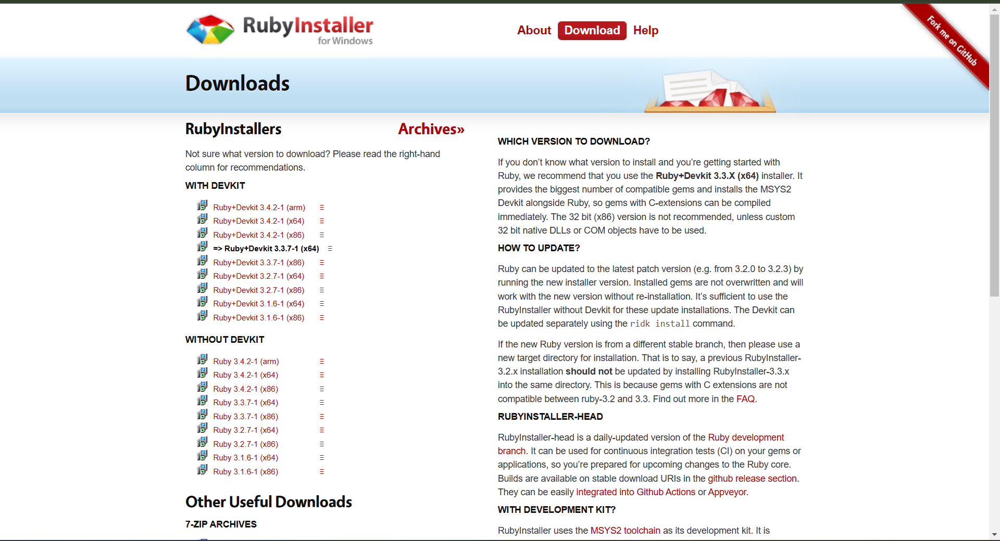
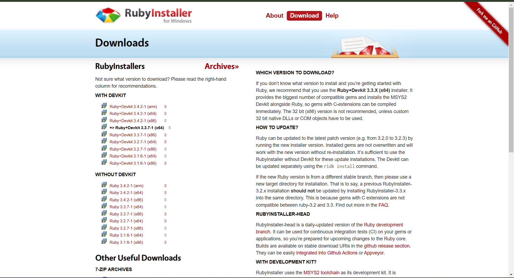
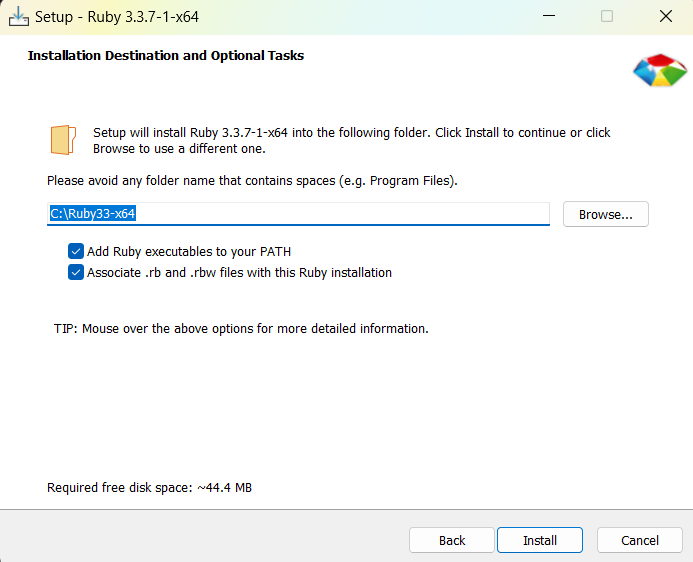
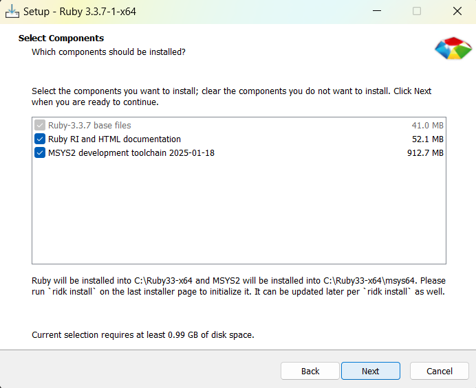
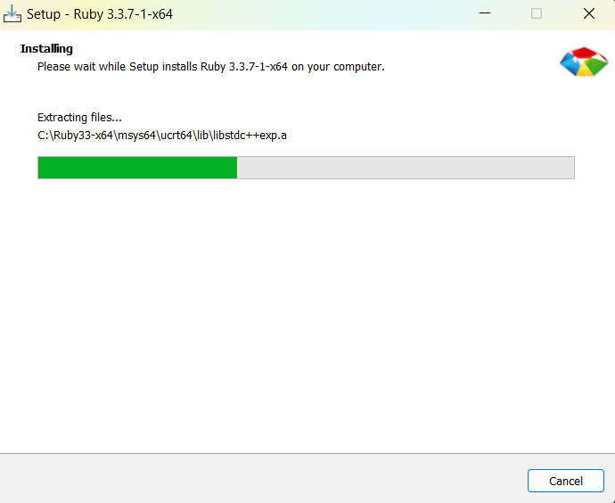
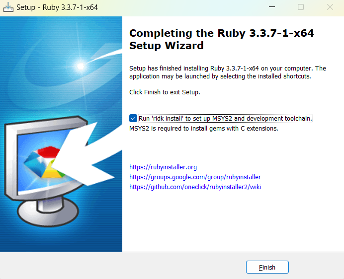
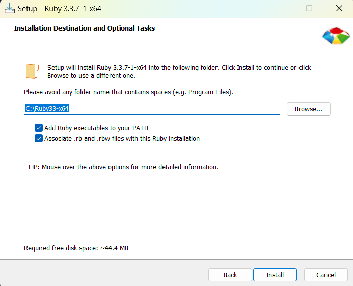
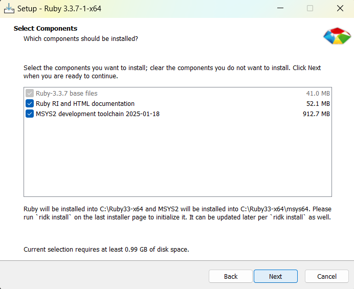
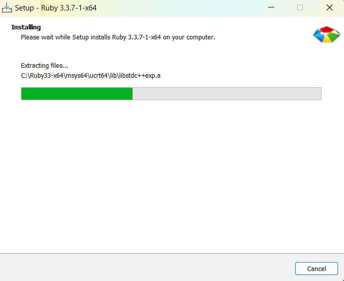
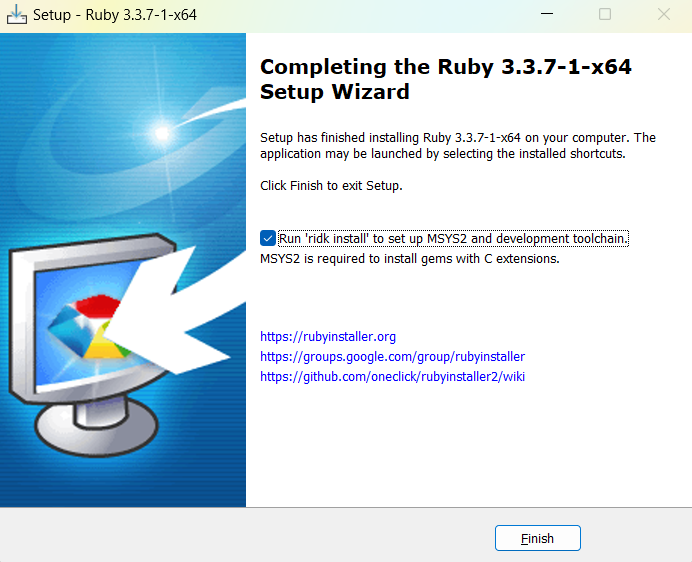

YouPlot is a command-line data visualization tool designed for users who prefer working in a terminal environment. It offers a lightweight and efficient way to generate quick visual insights without the need for GUI-based software. Whether you're working with CSV, JSON, or direct input, YouPlot enables the creation of bar charts, line plots, scatter plots, histograms, and more. This makes it an excellent tool for data analysts, developers, and researchers who require an instant graphical representation of data within scripts or interactive sessions.
To install ruby visit rubyinstaller.org, click on download and follow the following steps:
 

 







brew install youplotnix shell nixpkgs guix install youplot conda install -c conda-forge ruby
conda install -c conda-forge compilers
Once ruby installed verify by running:
ruby --v
gem --vTo install the tool, use the following command:
gem install youplotOnce installed, to see the version:
uplot --version| Command | Description |
|---|---|
cat data.tsv | uplot <command> [options] |
Take input from stdin |
uplot <command> [options] data.tsv ... |
Take input from files |
pipeline1 | uplot <command> -O | pipeline2 |
Outputs data from stdin to stdout |
| Command | Short | How it works |
|---|---|---|
| barplot | bar | Draw a horizontal barplot |
| histogram | hist | Draw a horizontal histogram |
| lineplot | line | Draw a line chart |
| lineplots | lines | Draw a line chart with multiple series |
| scatter | s | Draw a scatter plot |
| density | d | Draw a density plot |
| boxplot | box | Draw a horizontal boxplot |
| count | c | Draw a barplot based on the number of occurrences (slow) |
| colors | color | Show the list of available colors |
| Command | Code |
|---|---|
| Help | |
| Hist help | |
| Config | |
The basic syntax for using YouPlot is:
C:\Users\desktop1> uplot <command> [options] <data.tsv><command>: Type of plot you want (e.g., bar, line, scatter).
[options]: Customization options for the plot (like color, title, etc.).
<data.tsv>: The input file or data stream.
This command creates a bar plot from inline data using a comma as a delimiter.
C:\Users\desktop1> echo "Category A,10
Category B,25
Category C,18
Category D,30
Category E,22
Category F,15
Category G,28
Category H,35
Category I,40
Category J,50" | uplot bar -d ',' -t "Bar Plot Example"
Explanation:
The -d ',' specifies that the delimiter is a comma.
The -t option adds a title to the plot.
This command creates a histogram from a set of numerical values with 10 bins.
C:\Users\desktop1> "echo "1`n5`n2`n3`n6`n8`n7`n5`n3`n2`n1`n7`n8`
n9`n5`n6`n4`n3`n2`n6`n7`n8`n9`n2`n3`
n4`n5`n6`n7`n8`n9`n10`n12`n15`n18`
n20`n22`n25`n28`n30`n35`n40`n45`n50`n55`
n60`n65`n70`n75`n80`n85`n90`n95`n100"
uplot hist --n 10 -t "Histogram"
Explanation:
--nbins 10 divides the data into 10 bins.
-t adds a title.
This command creates a simple line plot with space-separated values.
C:\Users\desktop1> "-10,100
-9,81
-8,64
-7,49
-6,36
-5,25
-4,16
-3,9
-2,4
-1,1
0,0
1,1
2,4
3,9
4,16
5,25
6,36
7,49
8,64
9,81
10,100" | uplot line -d ' ' -t "Line plot of quadratic formula" 
Explanation:
uplot line creates a line plot
-d ' ' option specifies space as the delimiter.
This scatter plot visualizes two sets of numerical values separated by spaces.
C:\Users\desktop1> echo "1 3
2 6
3 9
4 12
5 15
4 7
9 5
3 10
7 2
4 8
1 1
5 6
3 7
2 5" | uplot scatter -d ' ' -t "Scatter Plot in Red" -c red
Explanation:
Each line contains an (x, y) pair.
-c red colors the scatter points red.
This command generates a density plot using randomly generated values.
C:\Users\desktop1> python -c "import random; print('\n'.join(f'{random.uniform(0,10)} {random.uniform(0,10)}' for _ in range(150)))" |
uplot density -d ' ' -t "Density Plot"
Explanation: Random (x, y) pairs are generated. The density plot visualizes the distribution of points.
This command creates a box plot for two different groups.
C:\Users\desktop1> echo "GroupA 10
GroupA 12
GroupA 14
GroupA 9
GroupB 11
GroupB 20
GroupB 22
GroupB 19
GroupB 23
GroupB 21" | uplot box -d ' ' -t "Box Plot of Two Groups"
Explanation: Shows median, quartiles, and outliers for two groups.
YouPlot allows color customization using the -c option.
C:\Users\desktop1> echo "GroupA 10
GroupA 12
GroupA 14
GroupA 9
GroupB 11
GroupB 20
GroupB 22
GroupB 19
GroupB 23
GroupB 21" | uplot box -d ' ' -t "Boxplot in Yellow" -c yellowExplanation:
-c yellow changes the box plot color.
This density plot uses red as the color.
C:\Users\desktop1> python -c "import random; print('\n'.join(f'{random.uniform(0,10)} {random.uniform(0,10)}' for _ in range(50)))" |
uplot density -d ' ' -t "Density Plot in Red" -c red
This command creates a simple line plot with space-separated values.
C:\Users\desktop1> echo "1 5
2 15
3 25
4 35
5 45" | uplot line -d ' ' -t "Line Plot in Blue" -c blue
Explanation:
The -d ' ' option specifies space as the delimiter.
-c blue sets the line color to blue.
YouPlot is a powerful command-line tool that can be combined with other utilities like awk, git bash, curl, python, and cut to visualize data efficiently. Here are some practical applications:
$ cat better_iris_data.tsv | head (Existing dataset)
$ cut -f1-4 better_iris_data.tsv | uplot boxplot -H -t "Iris Data Distribution"
Explanation:
cut -f1-4 Extracts the first four columns from the dataset
uplot boxplot -H -t Generates a boxplot titled "IRIS DATA Distribution" using the extracted data.
$ echo -e "Value1\tValue2\n1\t5\n2\t10\n3\t15\n4\t20\n5\t25" > data.tsvCreating a dataset and uploading to a file

Explanation:
cat data.csv reads the contents of the data.tsv file
uplot line -H plots the data as a line graph with headers automatically detected
This is useful for quickly checking trends in your data.
$ python -c "import random; print('\n'.join(f'{random.uniform(0,10)} {random.uniform(0,10)}' for _ in range(50)))" |
uplot density -d ' ' -t "Density Plot in Red" -c redExplanation:
python generates 50 pairs of random values
uplot density -d ' ' -t Visualizes the random points on a density plot.
This is ideal for testing visualization layouts with randomly generated data.
$ echo -e "1 10\n2 20\n3 30\n4 40\n5 50" > spaced_data.txt
uplot bar -d ' ' -t "Bar plot with Space Delimiter" spaced_data.txt

Explanation:
echo -e Prints the provided text to the terminal. The -e option allows interpretation of special characters like \n for new lines
1 10\n2 20\n3 30\n4 40\n5 50 This is the data being passed, where each line represents a pair of X and Y values.
uplot bar creates a bar plot
-d ' ' Specifies a space as the delimiter between the two numbers
-t Sets the title of the chart.
This method is useful for visualizing small sets of data quickly without creating a separate file. For example, you can visualize sales data for a week or test simple data inputs.
AWK is a powerful command-line tool for pattern scanning and processing. It is commonly used for data extraction and reporting. When combined with YouPlot, it becomes a handy way to preprocess data before visualizing it directly in the terminal.
$ awk 'NR>1 {print $1, $2}' data.tsv | uplot bar -d ' '
Explanation:
awk: Invokes the AWK command-line tool.'NR>1 {print $1, $2}': Skips the first line (usually headers) and prints the first and second columns from the file.data.tsv: The input file containing tab-separated data.|: Pipes the output from AWK into YouPlot.uplot bar -d ' ': Generates a horizontal bar chart, using a space as a delimiter.$ awk 'NR>1 {print NR-1, $2, $3}' line_data.tsv | uplot line -d ' '
Explanation:
NR>1: Skips the header row.print NR-1, $2, $3: Outputs a new index (starting from 1) followed by the second and third columns.line_data.tsv: Data source with numerical values.uplot line -d ' ': Generates a line chart from the processed data.$ echo "Scatter Plot (Height vs. Weight):"
$ awk 'NR>1 {print $1, $2}' random_data.tsv | uplot scatter -d ' '
Explanation:
echo: Prints a message to the terminal for context.awk 'NR>1 {print $1, $2}': Skips the header and prints the first two columns, representing height and weight.random_data.tsv: A dataset with random height and weight values.uplot scatter -d ' ': Generates a scatter plot from the extracted data.Generates various plots from the extracted data.
YouPlot is a powerful yet simple solution for data visualization in the command line. By eliminating the need for heavyweight applications, it allows users to quickly analyze datasets and extract meaningful insights. Whether for automating data exploration or visualizing real-time data, this tool proves to be a valuable addition to any developer’s workflow. Its compatibility with various data formats and ease of installation make it an excellent choice for anyone seeking an efficient, scriptable, and fast visualization method in the terminal.